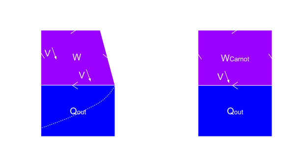
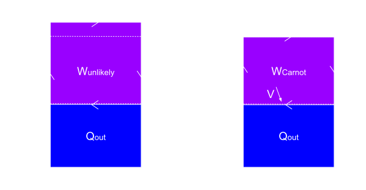

Thermodynamics
Temperature
Given a collection of particles, we are interested in their positions and momentum. In particular, we want to know the number of configurations for this collection of particles in terms of their positions and momentum. For a given state, the larger the number of configurations, the more likely we are going to observe the particles in this state. The state of a collection of particles is defined by the number of particles \(N\), the volume they are occupying \(V\), and their total energy \(U\).
For a single particle, the number of different locations it can reside in is \(V\). Thus for the entire collection of particles, the number of configurations in terms of position is \(V^{N}\).
The momentum of the collection of particles must satisfy $$\displaylines{ \begin{aligned} & p_{0x}^{2} + p_{0x}^{2} + p_{0x}^{2} \\ +\space & p_{1x}^{2} + p_{1x}^{2} + p_{1x}^{2} \\ +\space & ... \\ +\space & p_{Nx}^{2} + p_{Nx}^{2} + p_{Nx}^{2} = 2Um \\ \end{aligned} }$$ where \(p_{ix}\) is the momentum in the \(x\) direction of the \(i\)'th particle, and \(m\) is the particle's mass.
In other words, the number of configurations in terms of momentum is the surface area of a \(3N\) dimensional hypersphere, which is given by \(\frac{\pi^{\frac{3N}{2}}}{\left(\frac{3N}{2}\right)!}\sqrt{2mU}^{3N-1} \approx \frac{\left(2\pi mU\right)^{\frac{3N}{2}}}{\frac{3N}{2e}^{\frac{3N}{2}}} \approx \left(\frac{4\pi mU}{3N}\right)^{\frac{3N}{2}}e^{\frac{3N}{2}} \)
The number of configurations in terms of both position and momentum is \(V^{N}\left(\frac{4\pi mU}{3N}\right)^{\frac{3N}{2}}\frac{1}{h^{3N}}\), where h is the unit of positional and momentum counting \(\Delta x\Delta p = h\). However, this is only for the case where the particles are distinguishable. For the realisitc case where the particles are identical, we must divide by \(N!\).
Thus, the actual number of configurations for indistinguishable particles is
$$
\cssId{eq-1}{W = \frac{V^{N}\left(\frac{4\pi mU}{3Nh^{2}}\right)^{\frac{3N}{2}}e^{\frac{3N}{2}}}{N!} \approx \left(\frac{V}{N}\left(\frac{4\pi mU}{3Nh^{2}}\right)^{\frac{3}{2}}\right)^{N}e^{\frac{5N}{2}} \tag{1}}
$$
Given two boxes of particles A and B, which are allowed to exchange energy freely, we want to know whether energy will flow from A to B or B to A.
Let, \(W\) and \(W'\) be the number of configurations before and after energy change, \(dU\) be the amount of energy flown from A to B, the ratio between the total number of configurations after and before energy exchange is
$$\displaylines{
\begin{aligned}
\frac{W'_{total}}{W_{total}} =\space & \frac{W'_{A}W'_{B}}{W_{A}W_{B}} = \left(\frac{W_{A} + \frac{dW_{A}}{dU}\cdot(-dU)}{W_{A}}\right)\left(\frac{W_{B} + \frac{dW_{B}}{dU}dU}{W_{B}}\right) \\
=\space & \left(1 + \frac{\frac{dW_{A}}{W_{A}}}{dU}\cdot(-dU)\right)\left(1 + \frac{\frac{dW_{B}}{W_{B}}}{dU}dU\right) \\
=\space & \left(1 + \frac{d(logW_{A})}{dU}\cdot(-dU)\right)\left(1 + \frac{d(logW_{B})}{dU}dU\right) \\
=\space & 1 + \left(-\frac{d(logW_{A})}{dU} + \frac{d(logW_{B})}{dU}\right)dU
\end{aligned}
}$$
In order for us to observe the phenomenon of energy flowing from A to B with high probability, \(\frac{W'_{total}}{W_{total}}\) must be larger than 1, which implies \(\frac{dU}{d(logW_{A})} > \frac{dU}{d(logW_{B})}\).
Since the above statement captures our intuition for the concept of temperature, we take the quantity \(\frac{dU}{d(logW)}\) as our definition for it. Considering the fact that the number of configurations \(W\) is a dimensionless quantity, we deduce that the units for temperature are the same as that for energy. However, because by convention temperature is measured in units of "kelvins" \(K\), instead of "joules" as is common for energy, a constant \(k_{B}\) is needed to convert between them. We therefore arrive at the following definition for temperature: $$ T\space[K] = \frac{1}{k_{B}}\cdot\frac{dU\space[kg\cdot m^{2}\cdot s^{-2}]}{d(logW)} $$
Entropy
With the definition of entropy $$ \cssId{eq-2}{S \equiv k_{B}log(W) \tag{2}} $$ we can simplify our definition of temperature to \(T = \frac{dU}{dS}\). In addition, we also know that when the internal energy of the collection of particles is transformed into mechanical work, the decrease in internal energy is \(dU = -PdV\), where \(P\) is pressure. Therefore, we give the following definitions: $$\begin{alignat}{1} \text{Temperature,}\space\space\space\space & T \equiv & \cssId{eq-3}{\left(\frac{\partial U}{\partial S}\right)_{V,\space N}} \tag{3} \\ \text{Pressure,}\space\space\space\space & P \equiv - & \cssId{eq-4}{\left(\frac{\partial U}{\partial V}\right)_{S,\space N}} \tag{4} \\ \end{alignat}$$ Using these definitions along with eq. 1, we get \(S = k_{B}N\left(log\left(\frac{V}{N}\left(\frac{4\pi mU}{3Nh^{2}}\right)^{\frac{3}{2}}\right)+\frac{5}{2}\right)\), and thus $$\begin{align} T & \equiv \left(\frac{\partial U}{\partial S}\right)_{V,\space N} \\ & =\space \frac{\partial\left(\frac{3Nh^{2}}{4\pi m}\left(\frac{Ne^{\frac{S}{k_{B}N}-\frac{5}{2}}}{V}\right)^{\frac{2}{3}}\right)}{\partial S} \\ & =\space \frac{3Nh^{2}}{4\pi m} \cdot \frac{2}{3}x^{\frac{2}{3}-1} \cdot \frac{x}{k_{B}N},\space where\space x = \left(\frac{Ne^{\frac{S}{k_{B}N}-\frac{5}{2}}}{V}\right)^{\frac{2}{3}} \\ & =\space \left(\frac{3Nh^{2}}{4\pi m}x^{\frac{2}{3}}\right)\cdot\frac{2}{3}\frac{1}{k_{B}N} \\ & =\space U\cdot\frac{2}{3}\frac{1}{k_{B}N} \end{align}$$ Therefore, \(U = \frac{3}{2}Nk_{B}T\), and $$ \cssId{eq-5}{S = k_{B}N\left(log\left(\frac{VT^{\frac{3}{2}}}{N}\left(\frac{2\pi mk_{B}}{h^{2}}\right)^{\frac{3}{2}}\right)+\frac{5}{2}\right) \tag{5}} $$ With a good understanding of the definition of entropy, we next discuss the ways of measuring it in experiments. With respect to the environment, we assume that the only way our system can interact with it is through exchange of energy. Therefore, the change in entropy of the environment is \(\Delta S_{environment} = -\frac{Q}{T}\), where \(Q\) is the energy drawn from the environment. Suppose in addition to mechanical work, we also have electrical work defined by \(\mathcal{E}\Delta q\), where \(\mathcal{E}\) is the electromotive force, and \(\Delta q\) the amount of electric charge passing through. In this case \(Q = \Delta U + P\Delta V + \mathcal{E}\Delta q\), and thus $$ \Delta S_{environment} = -\frac{\Delta U + P\Delta V + \mathcal{E}\Delta q}{T} $$ On the other hand, \(\Delta S_{system}\) in general may have additional factors contributing, such as changes in particle numbers due to chemical reactions: $$ \cssId{eq-6}{\Delta S_{system} = \frac{Q}{T} -\sum_{i} \mu_{i}\Delta N_{i} \tag{6}} $$ where \(\mu_{i}\) is the chemical potential of the \(i\)'th substance and \(\Delta N_{i}\) its change in numbers. Nonetheless, when those factors are absent, \(\Delta S_{system} = \frac{Q}{T}\) is a correct formula, and is routinely employed in the measurements of standard molar entropies.
Carnot Engine
An engine is a device that performs work while changing its state in cycles. The state is defined by \(T\) and \(S\), where the state's dependance on \(U\) is captured in \(T\), and dependance on \(V\) in \(S\). Given the constraints where the volume of the engine is restricted between \(V_{min}\) and \(V_{max}\), and being operated between two heat reservoirs of temperatures \(T_{1}\) and \(T_{2}\), we ask what is the best engine design in terms of energy efficiency?
The cycle on the left hand side of the above image depicts an arbitrary engine, whereas the right hand side describes a particular design called the Carnot engine. Here we assume a conventional engine design without chemical reactions, thus from eq. 6 \(TdS = Q\) is the energy exchange with the environment. During the expansion phase where volume increases \(V\)⤴, the area under the curve \(TdS\) is the energy supplied by the environment \(Q_{in}\). Likewise, the area under the curve during the compression phase is the energy given away \(Q_{out}\). The difference between the two is the net work performed \(Q_{out}-Q_{in}=W\). Since $$\begin{aligned} W_{Carnot} > W & \Rightarrow 1 + \frac{Q_{out}}{W_{Carnot}} < 1 + \frac{Q_{out}}{W} \\ & \Rightarrow \frac{W_{Carnot}}{Q_{out}+W_{Carnot}} > \frac{W}{Q_{out}+W} \\ & \Rightarrow \frac{W_{Carnot}}{Q_{in,\space Carnot}} > \frac{W}{Q_{in}} \end{aligned}$$ the Carnot engine has a higher energy efficiency \(\frac{W}{Q_{in}}\) than all other designs.  Of all Carnot-like designs that alternate between isothermal and adiabatic processes, we further ask what is the maximum attainable efficiency? One such proposed design is shown on the left hand side of the above image with efficiency \(\frac{Q_{in}-Q_{out}}{Q_{in}} = \frac{T\Delta S - T_{1}\Delta S}{T\Delta S} = \frac{T-T_{1}}{T}\). However, this design has a low probability of working, since it asks for an energy transfer from a heat reservoir of temperature \(T_{2}\) to the engine at temperature \(T\), where \(T_{2} < T\). Therefore, we conclude from a probabilitic perspective, the maximum attainable efficiency is \(\frac{T_{2}-T_{1}}{T_{2}}\).
Calcination
The calcination reaction $$\begin{aligned} CaCO_{3}(s) \rightleftharpoons CaO(s) + CO_{2}(g) \end{aligned}$$ can be decomposed into reactions that form each substance from its constituent elements. $$\begin{aligned} & Ca(s) + \frac{1}{2}O_{2}(g) \rightleftharpoons CaO(s) \\ +\space\space\space\space\space\space\space\space & C(s, graphite) + O_{2}(g) \rightleftharpoons CO_{2}(g) \\ -\space\space\space\space\space\space\space\space & Ca(s) + C(s, graphite) + \frac{3}{2}O_{2}(g) \rightleftharpoons CaCO_{3}(s) \end{aligned}$$ For a given reaction \(aA + bB \rightleftharpoons cC + dD\), we start by writing down the formation reactions for each of its participating substances \(A\), \(B\), \(C\) and \(D\), like what we did above for calcination. The total entropy change of the reaction taking place is $$\begin{aligned} \Delta S_{total} & = \Delta S_{environment} + \Delta S_{reaction} \\ & = \frac{-\Delta H_{reaction}}{T} + \Delta S_{reaction} \\ \end{aligned}$$ where \(\Delta H = \Delta U + P\Delta V\) is the net change in energy of the reaction which is given the name enthalpy. Both the enthalpy and entropy change of the reaction is the sum of all of its formation reactions $$\begin{aligned} \Delta S_{total} & = -\frac{c\Delta H_{C} +d\Delta H_{D} - a\Delta H_{A} - b\Delta H_{B}}{T} + c\Delta S_{C} + d\Delta S_{D} - a\Delta S_{A} - b\Delta S_{B} \\ & = -\frac{\sum n_{i}\Delta H_{i}}{T} + \sum n_{i}\Delta S_{i} \\ & = -\frac{\sum n_{i}\Delta H_{i}}{T} + \sum n_{i}\left(S_{i} - S_{i,\space constituent\space elements}\right) \\ & = -\frac{\sum n_{i}\Delta H_{i}}{T} + \sum n_{i}S_{i} - \sum n_{i}S_{i,\space constituent\space elements} \\ & = -\frac{\sum n_{i}\Delta H_{i}}{T} + \sum n_{i}S_{i} \end{aligned}$$ since for a balanced reaction, \(\sum n_{i}S_{i,\space constituent\space elements}\) cancel themselves.
Setting \(PV = NRT\), where \(R = 8.3145J\cdot mol^{-1}\cdot K^{-1}\) into eq. 5, we get the following formula for \(n\) mole of particles \(S = nR\left(log\left(\frac{T^{\frac{5}{2}}}{P}\right)+C\right)\), where C is a constant. Therefore $$\begin{aligned} \Delta S_{total} & = -\frac{\sum n_{i}\Delta H_{i}}{T} + \sum n_{i}R\left(log\left(\frac{T^{\frac{5}{2}}}{P_{i}}\right) + C_{i}\right) \\ & = -\frac{\sum n_{i}\Delta H_{i}}{T} + \sum n_{i}R\left(log\left(\frac{T^{\frac{5}{2}}}{P^{\circ}}\frac{P^{\circ}}{P_{i}}\right) + C_{i}\right) \\ & = -\frac{\sum n_{i}\Delta H_{i}}{T} + \sum\left(n_{i}R\left(log\left(\frac{T^{\frac{5}{2}}}{P^{\circ}}\right) + C_{i}\right) + n_{i}R\cdot log\left(\frac{P^{\circ}}{P_{i}}\right)\right)\\ & = -\frac{\sum n_{i}\Delta H_{i}}{T} + \sum n_{i}S_{i, P^{\circ}} + \sum R\cdot log\left(\left(\frac{P^{\circ}}{P_{i}}\right)^{n_{i}}\right) \\ & = -\frac{\sum n_{i}\Delta H_{i}}{T} + \sum n_{i}S_{i, P^{\circ}} - R\cdot log\left(\frac{\left(\frac{P_{c}}{P^{\circ}}\right)^{c}\left(\frac{P_{d}}{P^{\circ}}\right)^{d}}{\left(\frac{P_{a}}{P^{\circ}}\right)^{a}\left(\frac{P_{b}}{P^{\circ}}\right)^{b}}\right) \\ & = -\frac{\sum n_{i}\Delta H_{i}}{T} + \sum n_{i}S_{i, P^{\circ}} - R\cdot log\left(Q_{c}\right) \end{aligned}$$ where \(P^{\circ}\) is the standard pressure at \(10^{5}Pa\), \(H_{i}\) is the heat energy transfer per mole, \(S_{i,P^{\circ}}\) the entropy per mole at standard pressure, and \(Q_{c}\) the reaction quotient. In equilibrium, \(\Delta S_{total} = 0\) and thus we have for the equilibrium constant \(K^{\ominus}\) $$ \cssId{eq-7}{K^{\ominus} \equiv \left(\frac{\left(\frac{P_{c,eq}}{P^{\circ}}\right)^{c}\left(\frac{P_{d,eq}}{P^{\circ}}\right)^{d}}{\left(\frac{P_{a,eq}}{P^{\circ}}\right)^{a}\left(\frac{P_{b,eq}}{P^{\circ}}\right)^{b}}\right) = e^{\left(\frac{1}{R}\left(-\frac{H}{T} + S_{P^{\circ}}\right)\right)} \tag{7}} $$ Since the equilibrium constant depends only on the heat transfer and entropy, it stays the same regardless of initial concentrations for a given temperature. For example, experiments on the dinitrogen tetroxide reaction at \(25^{\circ}C\) gives $$N_{2}O_{4}(g) \rightleftharpoons 2NO_{2}(g)$$

Taking the approximation of constant heat capacity, the formulas for heat transfer and entropy are $$\displaylines{ H(T) = H(T_{0}) + \int_{T_{0}}^{T} c(T)dT \approx H(T_{0}) + c(T_{0})\left(T - T_{0}\right) \\ S_{P^{\circ}}(T) = \int_{0}^{T}\frac{c(T)}{T}dT = S_{P^{\circ}}(T_{0}) + \int_{T_{0}}^{T}\frac{c(T)}{T}dT \approx S_{P^{\circ}}(T_{0}) + c(T_{0})log\left(\frac{T}{T_{0}}\right) }$$
The below table summarizes the data for the calcination process at temperature 775K:
| Property | \(CaCO_{3}\) | \(CaO\) | \(CO_{2}\) |
| \(H_{T}-H_{298}\space [Jmol^{-1}K^{-1}]\) | 50065[1] | 24620 | 22810 |
| \(S\space [Jmol^{-1}K^{-1}]\) | 189.3[1] | 85.86 | 257.5 |
| \(c [Jmol^{-1}K^{-1}]\) | 121.1[1] | 52.37 | 51.44 |
Since \(CaCO_{3}\) and \(CaO\) are solids, thus \(P_{CaCO_{3}} = P^{\circ}\) and \(P_{CaO} = P^{\circ}\). Therefore, \(K^{\ominus} = \frac{\frac{P_{CaO}}{P^{\circ}}\frac{P_{CO_{2}}}{P^{\circ}}}{\frac{P_{CaCO_{3}}}{P^{\circ}}} = \frac{P_{CO_{2}}}{P^{\circ}}\), and $$ P_{CO_{2}} = P^{\circ}K^{\ominus} = 10^{5}\cdot e^{\frac{1}{8.315}\left(-\frac{175165+(-17.29)\cdot(T - 775)}{T}+\left(154.06+(-17.29)\cdot log\left(\frac{T}{775}\right)\right)\right)} $$
The below table shows the true values of \(P_{CO_{2}}\) from experiments[2]:| T (°C) | 550 | 587 | 605 | 680 | 727 | 748 | 777 | 800 | 830 | 852 | 871 | 881 | 891 | 898 | 937 | 1082 | 1241 |
|---|---|---|---|---|---|---|---|---|---|---|---|---|---|---|---|---|---|
| P (kPa) | 0.055 | 0.13 | 0.31 | 1.80 | 5.9 | 9.3 | 14 | 24 | 34 | 51 | 72 | 80 | 91 | 101 | 179 | 901 | 3961 |
The below graph compares the theoretical calculations with the experimental values:
Ionization of Water
Water dissolves itself into ions, giving rise to phenomena such as electric conductivity and a certain acidity pH value $$ H_{2}O \rightleftharpoons H^{+} + OH^{-} $$ For ionice solutions, we derive something similar to eq. 7, but with concentrations instead of pressures as the unit of measurements. $$\begin{align} \Delta S_{total} & = -\frac{\Delta H}{T} + \sum n_{i}R\left(log\left(\frac{VT^{\frac{5}{2}}}{n_{i}}\right) + C_{i}\right) \\ & = -\frac{\Delta H}{T} + \sum n_{i}R\left(log\left(\frac{VT^{\frac{5}{2}}}{n^{\circ}}\frac{n^{\circ}}{n_{i}}\right) + C_{i}\right) \\ \end{align}$$ where \(n^{\circ}\) is chosen so that \(\frac{n^{\circ}}{V}\) is of concentration \(1mol\cdot kg^{-1}\). Thus, $$\begin{align} \Delta S_{total} & = -\frac{\Delta H}{T} + \sum\left(n_{i}R\left(log\left(\frac{VT^{\frac{5}{2}}}{n^{\circ}}\right) + C_{i}\right) - n_{i}R\cdot log\left(\frac{n_{i}}{n^{\circ}}\right)\right) \\ & = -\frac{\Delta H}{T} + \sum\left(n_{i}S_{i}^{\circ} - n_{i}R\cdot log\left(\frac{\frac{n_{i}}{1kg}}{\frac{n^{\circ}}{1kg}}\right)\right) \\ \end{align}$$ where \(S^{\circ}\) is the entropy per mole at standard concentration \(1mol\cdot kg^{-1}\). Thus, $$\begin{align} \Delta S_{total} & = -\frac{\Delta H}{T} + \sum\left(n_{i}S_{i}^{\circ} - n_{i}R\cdot log\left(\frac{\frac{n_{i}}{1kg}}{1mol\cdot kg^{-1}}\right)\right) \\ & = -\frac{\Delta H}{T} + \sum n_{i}S_{i}^{\circ} - R\cdot log\left(\prod m_{i}^{n_{i}}\right) \\ \end{align}$$ where \(m_{i}\) is the concentration in molalities. In practice, \(m_{i}\) should be replaced with \(\gamma_{i} m_{i}\), where \(\gamma_{i}\) is the activity coefficient to correct for the effects of ion electromagnetic interactions. As the solution approaches infinite dilution, \(\gamma_{i}\) approaches 1. Therefore, for the ionization of water under equilibrium $$\begin{align} \cssId{eq-8}{log\left(K_{water}\right) = log\left(\frac{\gamma_{H}\gamma_{OH}}{\gamma_{H_{2}O}}\cdot\frac{m_{H,eq}m_{O,eq}}{m_{H_{2}O,eq}}\right) = -\frac{\Delta H_{water}}{R}\cdot\frac{1}{T} + \frac{S_{water}^{\circ}}{R} \tag{8}} \end{align}$$ The heat per mole of water's ionization \(\Delta H_{water}\) can be directly measured from the heat released from the neutralization of strong acids and bases such as $$\begin{aligned} HCl + NaOH & \rightleftharpoons NaCl + H_{2}O \\ HClO_{4} + NaOH & \rightleftharpoons NaClO_{4} + H_{2}O \end{aligned}$$ since the net reaction is simply the reverse of the ionization of water \(H^{+} + OH^{-} \rightleftharpoons H_{2}O\), after removing the effects of the other ions present in the solution such as \(Na^{+}\), \(Cl^{-}\) etc. Calorimetric experiments by Hale et al.[3] and Pitzer[4] give \(\Delta H_{water} = 13.35kcal\cdot mol^{-1}\) at temperature \(25^{\circ}C\). In other words, calorimetry predicts that the slope of the \(log\left(K_{water}\right)\) over \(\frac{1}{T}\) curve would be \(\frac{13.35\frac{kcal}{mol}\cdot 4184\frac{J}{kcal}}{8.3145} = 6718\).
At the same time, the equilibrium constant \(log(K)\) can be measured directly by potentiometric experiments, too. For example, in the Harned cell below
| \(t [^{\circ}C]\) | \(K_{water} [10^{-14}]\) |
| 0 | 0.1139 |
| 5 | 0.1846 |
| 10 | 0.2920 |
| 15 | 0.4505 |
| 20 | 0.6809 |
| 25 | 1.008 |
| 30 | 1.469 |
| 35 | 2.089 |
| 40 | 2.919 |
| 45 | 4.018 |
| 50 | 5.474 |
| 55 | 7.297 |
| 60 | 9.614 |
Converting from Calories to Joules, \(H = 13.35kcal\cdot mol^{-1} = 55856J\cdot mol^{-1}\), \(S = -19.31cal\cdot K^{-1}mol^{-1} = -80.79J\cdot K^{-1}mol^{-1}\), \(C_{p} = -53.5cal\cdot K^{-1}mol^{-1} = -223.84J\cdot K^{-1}mol^{-1}\), and putting everything together, we get $$ \kappa\space [\mu S\cdot cm^{-1}] = 10^{-3}d\cdot e^{6\cdot log(10)+\left(\frac{1}{2\times 8.3145}\left(-\frac{55856-223.84(t-25)}{t+273}-80.79-223.84log\left(\frac{t+273}{298}\right)\right)\right)}\cdot\left(342.8+8.29t\right) $$ where \(t\) is in \(^{\circ}C\), and \(d\space [g\cdot cm^{-3}]\) the density of water for different temperatures which can be found on Wikipedia[11]. Comparing the values computed with the above formula with experimental data[12] gives the following plot
Reference
- ^ Jacobs, G. K., Kerrick, D. M., & Krupka, K. M. (1981). The high-temperature heat capacity of natural calcite (CaCO3). Physics and Chemistry of Minerals, 7(2), 55–59. doi:10.1007/bf00309451
- ^ Wikipedia article on Calcination.
- ^ Hale, J. D., Izatt, R. M., & Christensen, J. J. (1963). A calorimetric study of the heat of ionization of water at 25°. The Journal of Physical Chemistry, 67(12), 2605–2608. doi:10.1021/j100806a025
- ^ Pitzer, K. S. (1937). The Heats of Ionization of Water, Ammonium Hydroxide, Carbonic, Phosphoric, and Sulfuric Acids. The Variation of Ionization Constants with Temperature and the Entropy Change with Ionization. Journal of the American Chemical Society, 59(11), 2365–2371. doi:10.1021/ja01290a080
- ^ Harned, H. S., & Ehlers, R. W. (1932). The dissociation constant of acetic acid from 0 to 35° centigrade. Journal of the American Chemical Society, 54(4), 1350–1357. doi:10.1021/ja01343a013
- ^ R. A. Robinson and R. H. Stokes, "Electrolyte Solutions," 2nd ed., Butterworths, London (1965), page 364.
- ^ a b Hepler, L. G., and Woolley, E. M. (1973). In "Water, A Comprehensive Treatise" (F. Franks, ed.), Vol. 3 "Aqueous Solutions of Simple Electrolytes", Plenum, New York. Reference a: page 146, b: pager 153.
- ^ Harned, H. S., & Hamer, W. J. (1933). The Ionization Constant of Water and the Dissociation of Water in Potassium Chloride Solutions from Electromotive Forces of Cells without Liquid Junction1. Journal of the American Chemical Society, 55(6), 2194–2206. doi:10.1021/ja01333a002
- ^ Friedrich Kohlrausch (1901). Über den Temperatureinfluss auf das elektrische Leitvermögen von Lösungen, insbesondere auf die Beweglichkeit der einzelnen Ionen im Wasser. Sitzungsberichte der Königlich Preussischen Akademie der Wissenschaften zu Berlin, page 1026. A transcript can be found here, along with its translation.
- ^ Heydweiller, A. (1909). Über Ionisationswärme und Ionisationskonstante des Wassers. Annalen Der Physik, 333(3), 503–512. doi:10.1002/andp.19093330304
- ^ Wikipedia article containing data on water.
- ^ Melnik, L. A., & Krysenko, D. A. (2019). Ultrapure Water: Properties, Production, and Use. Journal of Water Chemistry and Technology, 41(3), 143–150. doi:10.3103/s1063455x19030020